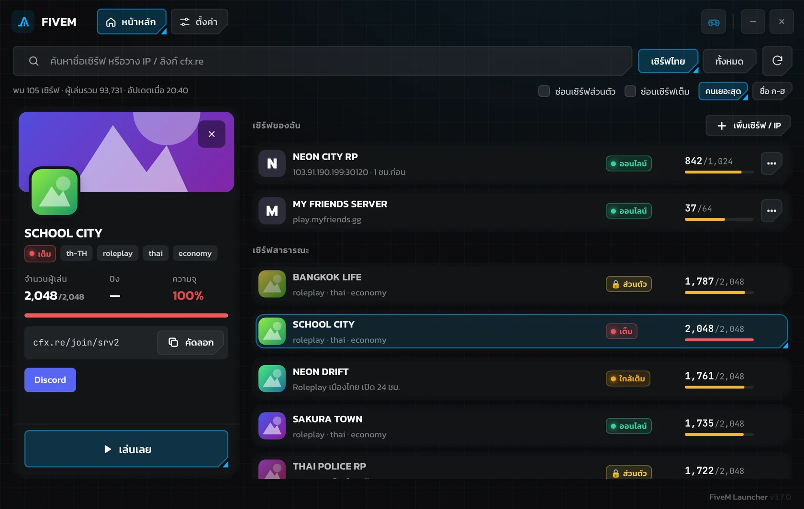

เปิดมาเจอรายชื่อเซิร์ฟ FiveM ทั้งหมด เห็นทันทีว่าเซิร์ฟไหนว่าง ใกล้เต็ม หรือเต็ม เก็บเซิร์ฟส่วนตัวด้วย IP ไว้กดเข้าได้ตลอด — โปรแกรมเล็ก เบา ไม่กินเครื่อง
ดาวน์โหลดฟรีสำหรับ Windows
ทุกอย่างที่ต้องใช้ก่อนเข้าเกม รวมไว้ในหน้าเดียว
เปิดมาเจอเซิร์ฟไทยเรียงตามคนเล่น พร้อมโลโก้จริง ค้นหาชื่อได้ ซ่อนเซิร์ฟส่วนตัวหรือเซิร์ฟเต็มได้
รู้ทันทีว่าเซิร์ฟพร้อมเข้าไหมออนไลน์ใกล้เต็มเต็ม
กด "เล่นเลย" หรือดับเบิลคลิกที่เซิร์ฟ เปิด FiveM และเชื่อมต่อให้อัตโนมัติ ไม่ต้องพิมพ์ connect ใน F8
เพิ่มเซิร์ฟส่วนตัวด้วย IP หรือลิงก์ cfx.re ไว้บนสุดของรายชื่อ จัดกลุ่มได้ และแจ้งเตือนเมื่อเซิร์ฟเต็มแล้วมีที่ว่าง
แก้อาการเกมเด้ง โหลดค้าง หรือพื้นที่เต็ม บอกขนาดก่อนลบทุกครั้ง ไม่กระทบตัวเกมหรือบัญชี
ตอนเล่นเกมโปรแกรมผ่อนแรงเอง ย่อหน้าต่างแล้วหยุดทำงานเบื้องหลัง อัปเดตเวอร์ชันใหม่ให้อัตโนมัติ
ใช้เวลาไม่ถึงนาที
กดปุ่มดาวน์โหลดด้านบน จะได้ไฟล์ FiveM-Launcher-Setup.exe
ดับเบิลคลิกไฟล์ แล้วกด "ถัดไป" ตามขั้นตอนจนติดตั้งเสร็จ
เลือกเซิร์ฟจากรายชื่อ หรือกด "เพิ่มเซิร์ฟ / IP" เพื่อเก็บเซิร์ฟของคุณเอง
โปรแกรมติดตั้งในโฟลเดอร์ของผู้ใช้ ไม่ต้องใช้สิทธิ์ Admin และไม่แตะไฟล์ระบบ สิ่งที่ทำมีแค่โหลดรายชื่อเซิร์ฟสาธารณะของ FiveM อ่านสถานะเซิร์ฟ เปิด FiveM และลบโฟลเดอร์แคชของ FiveM เมื่อคุณสั่งเท่านั้น ข้อมูลเซิร์ฟของคุณเก็บอยู่ในเครื่อง ไม่ส่งไปที่ไหน และโค้ดทั้งหมดเปิดให้ดูได้บน GitHub
Windows 10 หรือ 11 (64-bit) และต้องติดตั้ง FiveM ไว้แล้ว ถ้ายังไม่มี โปรแกรมจะขึ้นแถบแจ้งพร้อมปุ่มดาวน์โหลด FiveM ให้ โปรแกรมใช้ Microsoft Edge WebView2 ซึ่งมีมากับ Windows 11 และ Windows 10 ที่อัปเดตแล้ว
เจ้าของเซิร์ฟตั้งไว้ไม่ให้เข้าผ่านรายชื่อของ FiveM (ในตัว FiveM เองก็กดเข้าไม่ได้) ให้ขอ IP หรือลิงก์จาก Discord ของเซิร์ฟ แล้ววางในแผงด้านซ้ายของเซิร์ฟนั้น โปรแกรมจะบันทึกไว้ใน "เซิร์ฟของฉัน" ให้กดเข้าได้ทุกครั้ง
เช็กว่าติดตั้ง FiveM แล้วและเปิดเองได้ปกติ ถ้า Windows ถามว่าจะเปิดลิงก์ด้วยโปรแกรมไหน ให้เลือก FiveM ถ้ายังไม่ได้ ลองไปที่ ตั้งค่า → ตำแหน่ง FiveM แล้วเลือกไฟล์ FiveM.exe เอง
ไม่หาย จะลบเฉพาะไฟล์ชั่วคราวที่ FiveM โหลดจากเซิร์ฟ (crashes, cache, server-cache) ไม่กระทบตัวเกม การตั้งค่า หรือบัญชี ครั้งต่อไปที่เข้าเซิร์ฟจะโหลดนานขึ้นนิดหน่อย
ไปที่ การตั้งค่า (Settings) → แอป (Apps) → ค้นหา FiveM Launcher → ถอนการติดตั้ง (Uninstall)